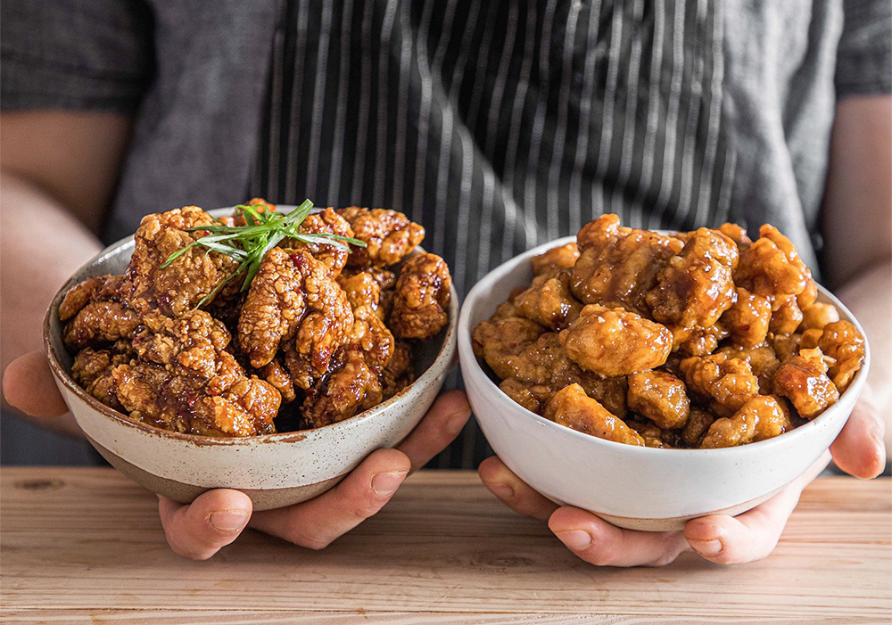

Orange Chicken
Like the Panda, but better
This recipe comes from Joshua Weismann's "But Better" series
and offers a flavor explosion upgrade to a classic favorite: Orange Chicken
Its salty, its sweet, it's got that punchy garlicy-ness, and it's got cwisp!
So lets make this, shall we?
- Medium Saucepan
- Large and Medium Mixing Bowls
- Large Heavy-Bottom Pot
Sauce:
- 3/4 Cup (170g) Sugar
- 3/4 Cup (180mL) White Vinegar
- 1/3 Cup + 1Tbsp (90mL) Soy Sauce
- 1/4 Cup (60mL) Water
- 1x Orange (Zest and Juice)
- 1 Splash Shaoxing Wine
- 1 Splash Ching Kiang Vinegar
- 1 Tbsp (10g) Corn Starch, plus
- 1 Tbsp Water
- 4 Cloves Garlic, Grated
- 2-inch Knob Ginger, Grated
- 1-2x Red Fresno Chilies, finely minced
Chicken Dredge:
- 1.5lbs Chicken Thighs
- 2x Eggs
- Salt To Taste
- MSG Optional
- 1 Cup (140g) Corn Starch
- 1/2 Cup (75g) All Purpose Flour
Orange Chicken Sauce:
- In a medium saucepan, combine 3/4cup (170g) granulated sugar, 3/4cup (180mL) white vinegar, 1/3 cup plus 1 tbsp (90mL) double fermented soy sauce (or regular), and 1/4cup (60mL) water, then the zest and juice of one orange.
- Mix together and bring to a boil over high heat. As soon as it comes to a boil, reduce your heat to medium and simmer. During that simmer time you can optionally add a splash of shaoxing wine and a splash of ching kiang vinegar.
- Then, simmer 8 to 10 minutes or until reduced approximately 25%.
- Separately mix together 1tbsp (10g) cornstarch with 1tbsp water until thoroughly mixed.
- Mix into the simmered/reduced sauce while still hot and simmer for an additional minute or until thickened.
- Then immediately add 4 cloves garlic, grated, 1inch knob ginger, grated, and 1 or 2 red Fresno chilies, finely minced.
- Note, adding at the end of the simmer is important. Do not add garlic, ginger, chilies mix too early or it will go bitter. Add at the end while sauce is still hot then let it steep.
Chicken Preparation:
- Take 1.5lbs chicken thighs, cut into approximately one and a half inch thick pieces, lay out on a pan and lightly season with salt and MSG (MSG is optional).
- In a medium sized bowl combine 1 cup (140g) corn starch with 1/2 cup (75g) all-purpose flour and whisk together until thoroughly combined. In a separate bowl, whisk together 2 whole eggs with a splash of water.
- To properly coat chicken, first toss a handful of peices in the flour mixture, once they're thoroughly coated, shake off excess, toss in the egg mixture, then re-toss in the flour mixture coating thoroughly. Set aside and repeat with remaining chicken.
To Cook:
- Fill a large heavy-bottom pot with oil at least 3 inches deep, preheat oil to 375°F.
- Once hot, fry chicken in small batches for approximately 3 to 5 minutes, or until light golden in color.
- Remove and set aside on wire rack to cool slightly and repeat with remaining chicken.
To Serve:
- Place fried chicken in a bowl, drizzle with an appropriate amount of sauce and toss until every piece is completely coated, add sauce as needed.
- Optionally top with sliced green onion and/or sliced red fresno chilies for flair.